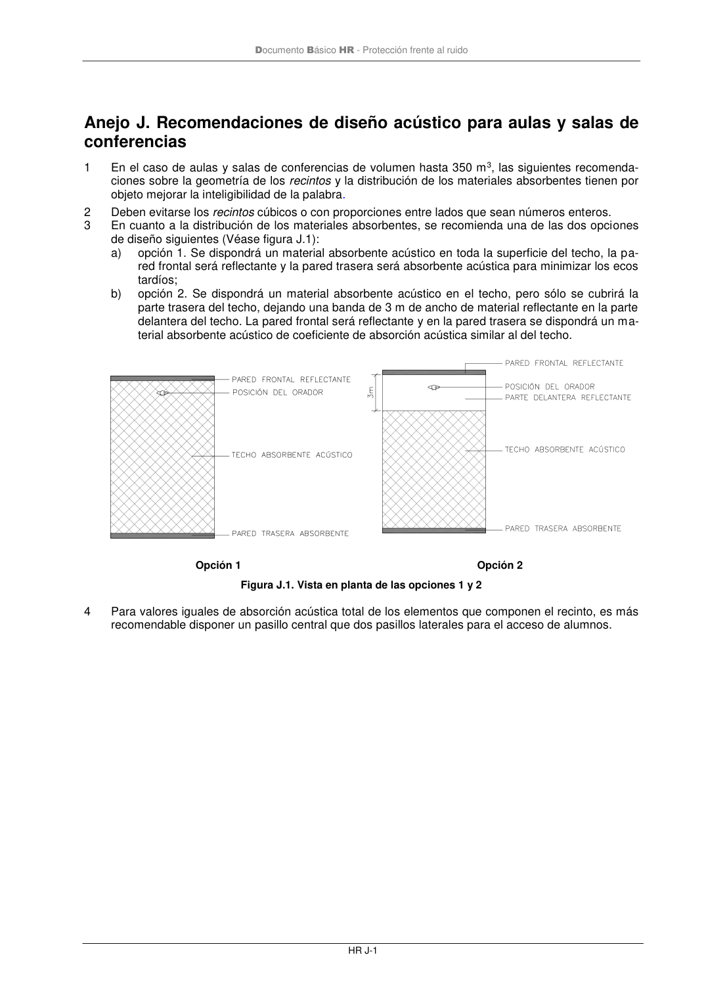

DB-HR · Anejo J. Recomendaciones de diseño acústico para aulas y salas de conferencias · versión 2019-12-20
SHA256: a67baeca5138bb1f121f797d23a79a4557bd9ac4abacd954024893e05411eeab · página física 73 de 80 · métodos de encabezado
solo si están cotejados.
Formatos: Markdown · JSON de bloques · PDF p. 73 · imagen PNG
Documento Básico HR - Protección frente al ruido HR J-1 Anejo J. Recomendaciones de diseño acústico para aulas y salas de conferencias 1 En el caso de aulas y salas de conferencias de volumen hasta 350 m3, las siguientes recomenda- ciones sobre la geometría de los recintos y la distribución de los materiales absorbentes tienen por objeto mejorar la inteligibilidad de la palabra. 2 Deben evitarse los recintos cúbicos o con proporciones entre lados que sean números enteros. 3 En cuanto a la distribución de los materiales absorbentes, se recomienda una de las dos opciones de diseño siguientes (Véase figura J.1): a) opción 1. Se dispondrá un material absorbente acústico en toda la superficie del techo, la pa- red frontal será reflectante y la pared trasera será absorbente acústica para minimizar los ecos tardíos; b) opción 2. Se dispondrá un material absorbente acústico en el techo, pero sólo se cubrirá la parte trasera del techo, dejando una banda de 3 m de ancho de material reflectante en la parte delantera del techo. La pared frontal será reflectante y en la pared trasera se dispondrá un ma- terial absorbente acústico de coeficiente de absorción acústica similar al del techo. Opción 1 Opción 2 Figura J.1. Vista en planta de las opciones 1 y 2 4 Para valores iguales de absorción acústica total de los elementos que componen el recinto, es más recomendable disponer un pasillo central que dos pasillos laterales para el acceso de alumnos.
